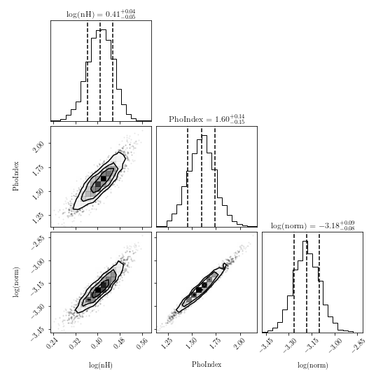
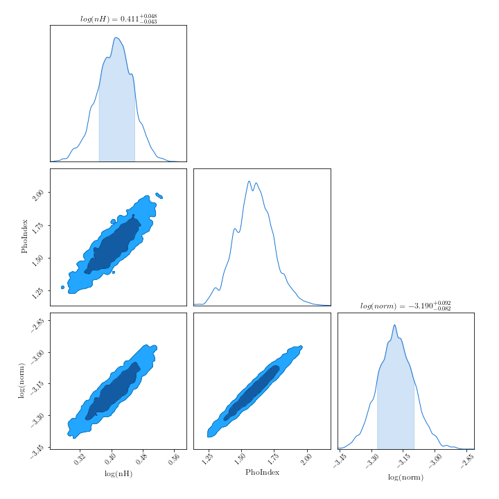
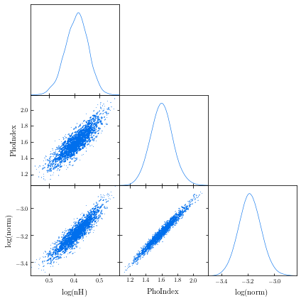

-
To find the version of your bxa install:
import bxa, pkg_resources print(pkg_resources.get_distribution("bxa").version)
- To use BXA with chi-squared statistics (if you're sure you want to):
bxa.BXASolver.allowed_stats.append("chi2") - Renaming BXA parameters: sometimes models can have multiple parameters with the same name (e.g., two or more additive model components with a
normparameter). When the BXA fit is run, the posterior and corner plot will show the same parameter name, making it difficult to interpret which parameters are which. An alternative is to change the parameter name when inside the corresponding prior:prior1 = bxa.create_loguniform_prior_for(model, model.zpowerlw.norm) prior1["name"] = "log(norm_zpo)"
- You can use BXA with Sherpa to fit 2D models to images:
import bxa.sherpa as bxa load_image("image.fits") image_data() set_coord("physical") set_stat("cash") model = gauss2d.g1 + gauss2d.g2 + const2d.bg set_source(model) set_par(g1.ampl, val = 20., min = 1., max = 1.e2) ... parameters = [g1.ampl, ...] priors = [bxa.create_loguniform_prior_for(g1.ampl), ...] priorfunction = bxa.create_prior_function(priors) solver = bxa.BXASolver(prior=priorfunction, parameters=parameters, outputfiles_basename = "fit2d_sherpa") results = solver.run(resume=True) image_data() image_model(newframe=True) image_resid(newframe=True)
Here is an example fit to the image used in this Sherpa tutorial for 2D fitting (left, middle and right panels show the image, best-fit model and residuals respectively):

- Using other sampling algorithms: Once the
solverobject has been created, you can acquire the log-Likelihood, parameter names and priors as follows:- PyXspec:
loglike = solver.log_likelihood paramnames = solver.paramnames prior = solver.prior_function
- Sherpa:
loglike = solver.log_likelihood paramnames = solver.paramnames prior = solver.prior_transform
These can then be passed to other sampling algorithms (including nested sampling) easily:- MCMC algorithms (e.g.,
emceeorzeus):
from autoemcee import ReactiveAffineInvariantSampler sampler = ReactiveAffineInvariantSampler(paramnames, loglike, prior) result = sampler.run()
- Laplace approximation, Importance Sampling:
from snowline import ReactiveImportanceSampler sampler = ReactiveImportanceSampler(paramnames, loglike, transform) result = sampler.run()
- Nested sampling:
from ultranest import ReactiveNestedSampler sampler = ReactiveNestedSampler(paramnames, loglike, prior) result = sampler.run()
- PyXspec:
There are a number of packages available to produce contour plots in Python. Here are a few examples, with some short code snippets to plot BXA posterior corner plots. Note the code snippets assume the posteriors are a pandas dataframe. To do this, you can type:
import pandas as pd
outputfiles_basename = "example_basename"
posterior = pd.read_csv("./%s/chains/equal_weighted_post.txt" %(example_basename), delim_whitespace=True)
corner:
corner.readthedocs.io/en/latest/pages/quickstart.html
import corner fig = corner.corner(posterior.values, labels=posterior.columns, quantiles=[0.16, 0.5, 0.84], show_titles=True) fig.savefig("/path/to/your/corner.png")ChainConsumer:
samreay.github.io/ChainConsumer/examples/plot_introduction.html
from chainconsumer import ChainConsumer c=ChainConsumer() c.add_chain(posterior.values, parameters = [r"%s" %(p) for p in posterior.columns]) fig=c.plotter.plot(figsize=(10, 10)) fig.savefig("/path/to/your/corner.png")GetDist:
getdist.readthedocs.io/en/latest/plot_gallery.html
from getdist import plots, MCSamples samples1 = MCSamples(samples=posterior.values, names=posterior.columns) g = plots.get_subplot_plotter() g.triangle_plot(samples1, filled=True) g.export("/path/to/your/corner.png")
Note the confidence regions in 2D histograms are not the same as in 1D histograms. See this webpage from
corner for more information.


